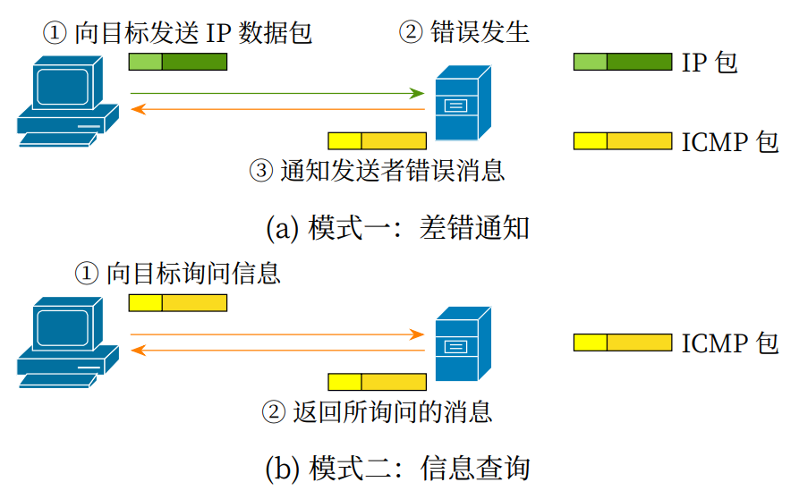
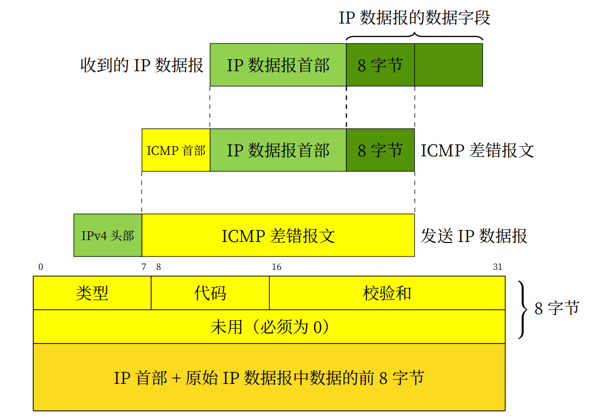

1. 实 验目的
熟悉ICMP数据包格式；
掌握ICMP数据包的的发送和接收处理过程。
2. 实验任务
在完成Lab5协议栈之IP协议的基础上，编写ICMP报文的发送、接收函数，使其能够发送和接收ICMP数据报文，并且能通过实验评测系统的测试。
3. 实验原理
3.1. ICMP协议概要
从前面的实验可知，IP旨在让最终目标主机收到数据包，但在实际通信中，仅凭IP远远不够，还需要众多支持IP的相关技术才能够实现最终通信。例如，IP协议本身并没有为终端设备提供直接的方法来发现发往目的地址失败的IP数据包，也不能进行问题诊断。为解决这些不足，将Internet控制报文协议（Internet Control Message Protocol，ICMP）与IP结合使用，以便提供与IP协议层配置和IP数据包处理相关的诊断和控制信息。
ICMP主要功能包括：确认IP包是否成功送达目标地址、通知发送过程当中IP包被废弃的具体原因、改善网络设置等。ICMP协议应用在许多网络管理命令中。例如，ping命令使用ICMP回送请求和应答报文，路由分析诊断程序tracert使用ICMP时间超过报文等。
3.2. ICMP报文格式
报文是在IP数据报内被封装传输的。ICMP头部8个字节，所有数据都在ICMP头部后面。ICMP报文格式具体见RFC777，RFC792规范。

ICMP的消息大致可以分为两类：一类是通知出错原因的错误消息（又称差错报文，error message），另一类是用于诊断的查询消息（又称询问或信息报文，information message）。
3.2.1. ICMP差错报文结构
差错报文保留IP数据包中的前8个字节意义：TCP、UDP前八字节都含有源端口号，可以反馈给源主机。接收ICMP差错报文的模块就会把它与某个协议和用户进程联系起来。其中协议：根据IP数据报首部中的协议字段来判断，用户进程：根据包含在IP数据报前8字节中的TCP、UDP报文首部中的TCP、UDP端口号判断。
3.2.2. ICMP询问报文结构
信息报文结构如下图。ICMP头部中的类型（Type）域用于说明ICMP报文的作用及格式，代码（Code）域用于详细说明某种ICMP报文的类型，其后的16位校验和（Checksum）字段涵盖了整个报文。标识仅适用于回显请求和应答ICMP报文。序列号序列号字段从0开始，并且每发送一个回显请求报文便增加1。数据字段是ping 程序在传出的回显请求中的可选数据区域中包含了一份本地时间拷贝。

以下是常见的ICMP报文“类型”和“代码”字段用途。
TYPE |
CODE |
Description |
|---|---|---|
0 |
0 |
询问报文：Echo Reply——回显应答（Ping应答） |
3 |
0 |
差错报文：Network Unreachable——网络不可达 |
3 |
1 |
差错报文：Host Unreachable——主机不可达 |
3 |
2 |
差错报文：Protocol Unreachable——协议不可达 |
3 |
3 |
差错报文：Port Unreachable——端口不可达 |
8 |
0 |
询问报文：Echo request——回显请求（Ping请求） |
11 |
0 |
差错报文：TTL equals 0 during transit——传输期间生存时间为0 |
12 |
0 |
差错报文：IP header bad (catchall error)——坏的IP首部（包括各种差错） |
4. 代码实现与检测
请同学们认真阅读本实验提供的代码框架，并补充完整src/icmp.c文件中的icmp_in()函数、icmp_unreachable()函数。
4.1. ICMP数据报输入处理
同学们需要自行实现icmp_in()函数，功能如下：
Step1 ：首先做报头检测，如果接收到的包长小于ICMP头部长度，则丢弃不处理。
Step2 ：接着，查看该报文的ICMP类型是否为回显请求。
Step3 ：如果是，则回送一个回显应答（ping 应答），需要自行封装应答包。注意要调用buf_init()来初始化txbuf，然后封装报头和数据，数据部分可以拷贝来自接收的回显请求报文中的数据。
Step4 ：填写校验和，ICMP的校验和和IP协议校验和算法是一样的。
Step5 ：调用ip_out()函数将数据报发送出去。
4.2. ICMP数据报输出处理
本实验中，只需要输出icmp unreachable的差错报文。仅支持如下差错代码：
typedef enum icmp_code
{
ICMP_CODE_PROTOCOL_UNREACH = 2, // 协议不可达
ICMP_CODE_PORT_UNREACH = 3 // 端口不可达
} icmp_code_t;
同学们需要自行实现icmp_unreachable()函数，功能如下：
Step1 ：首先调用buf_init()来初始化txbuf，填写ICMP报头首部。
Step2 ：接着，填写ICMP数据部分，包括IP数据报首部和IP数据报的前8个字节的数据字段，填写校验和。
Step3 ：调用ip_out()函数将数据报发送出去。
4.3. 实验自测
ICMP自测需要通过icmp_test测试。

接着，打开VSCode的终端，到build目录下，输入ctest -R icmp_test进行自测。

如果提示有错，请参照eth协议自测的排除方法来找bug。
5. 实验提交
请参考实验二的提交方式。